ANTHROPOGRAPHIK
RACONTER LA CRISE CLIMATIQUE
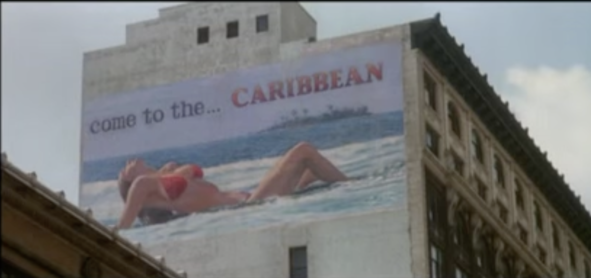
 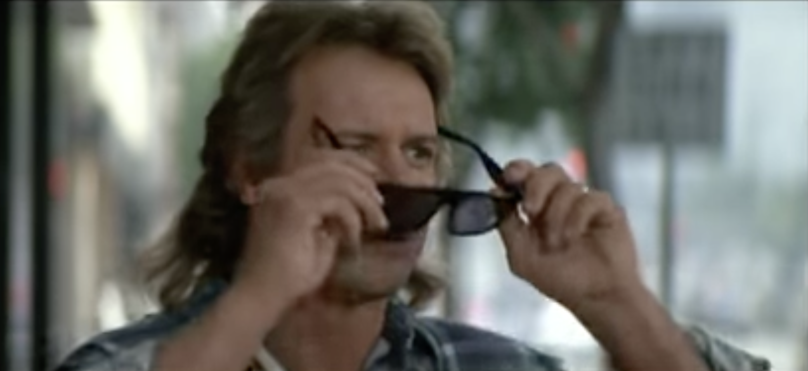
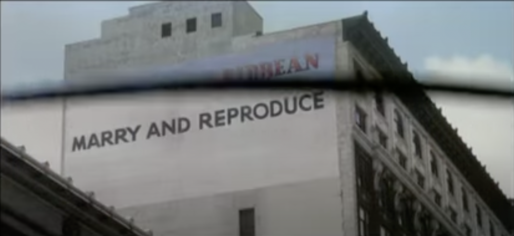
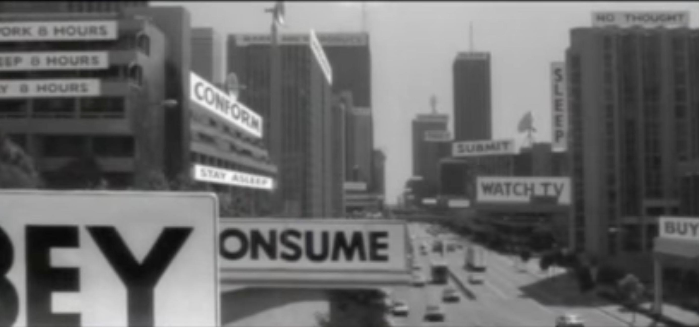
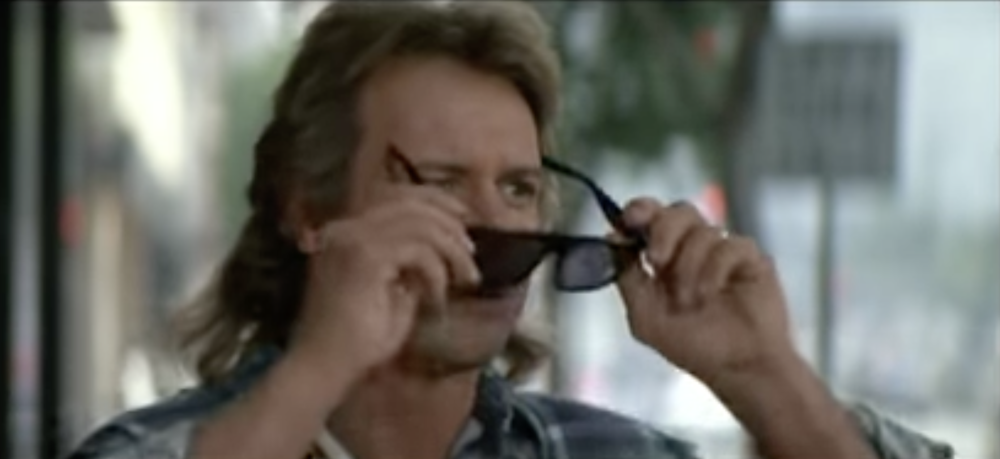
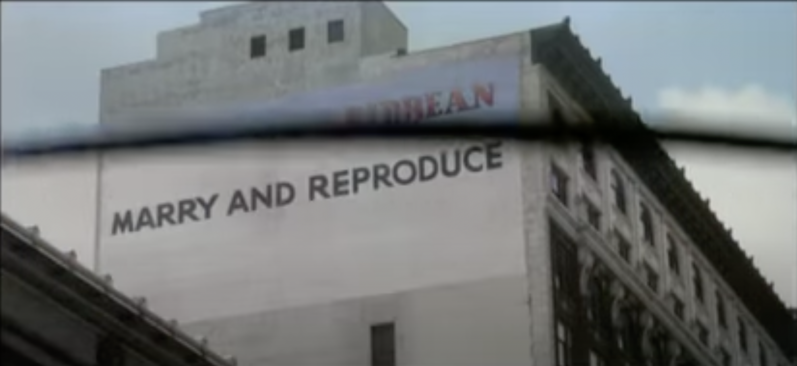
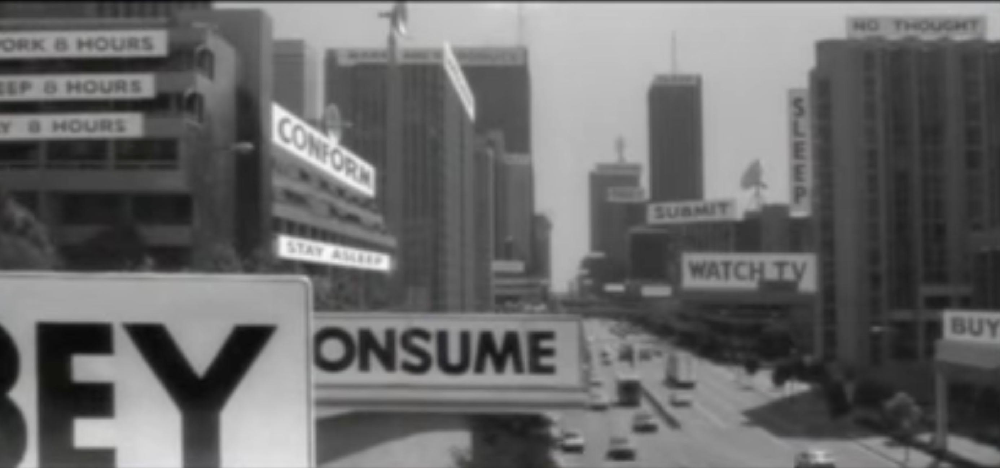
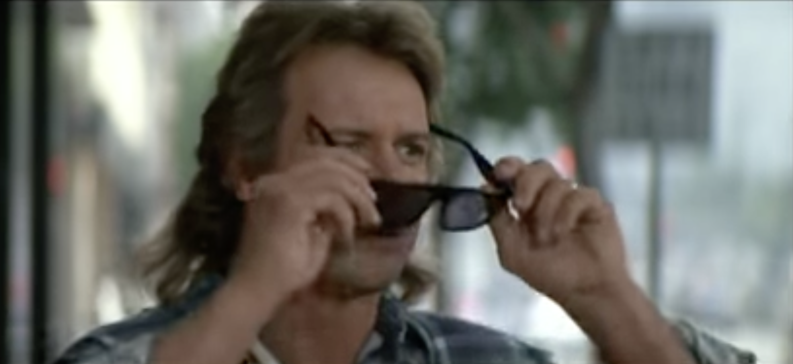
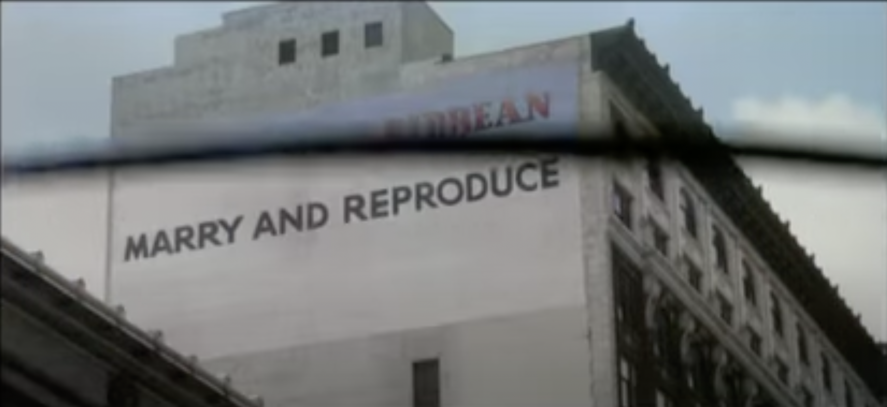
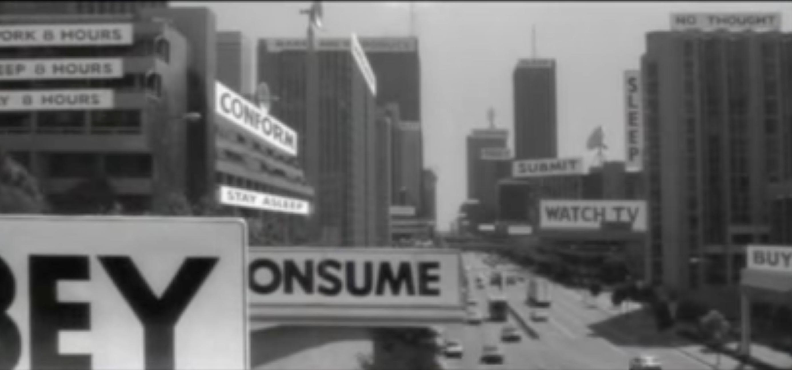
1- John Carpenter . (1988). They live. Alive Films
2- John Berger (1972)
Ways of Seeing Ep 04, Youtube http://www.youtube. com/watch?v=5jTUebm73IY
3- Donna J. Haraway (2016) Vivre avec le Trouble.Duke University Press
2- John Berger (1972)
Ways of Seeing Ep 04, Youtube http://www.youtube. com/watch?v=5jTUebm73IY
3- Donna J. Haraway (2016) Vivre avec le Trouble.Duke University Press
Il s’agit d’abord de développer un outil analytique des récits climatiques. C’est à dire une grille de lecture, qui permette de déceler les modes de vies symbolisées dans les images qui font notre quotidien.
À la manière de Johnn Capenter, dans They live1, les lunettes, enfilées par le personnage principal dénudent les images publicitaires de leur langage visuel, pour n’af- ficher plus qu’un message brut.
Ainsi une publicité pour une agence de voyage, qui promeut des vacances idylliques avec une femme en mail- lot de bain, devient « Marry and reproduce ». Réduite à sa fonction principale, communiquer,
et sans sa couche esthétique, la publicité est critiquée de manière satyrique dans cette séquence. Elle nous rappelle l’importance des images ren- dues publiques dans l’élaboration d’un langage commun.
Dans cette scène culte, la rue nous est montré comme un canal d’expression, de con- struction et de diffusion d’idéologies.
En effet, on peut penser que toutes les images qui peuplent notre environnement, et promeu- vent un mode de vie via les services et objet qu’elles nous vendent modèlent nos imaginaires, nos rêves.
Comme le décrit John Berger2 il s’agirait de considérer le paysage publicitaire comme une dimension parallèle. Nous somme « entourés d’images d’un mode de vie alternatif » , des pub avec lesquelles nous cohabitons, deux réalités, qui se rencontrent dans
l’espace publique.« Nous pouvons oublier ces images, mais pour un instant nous les emportons avec nous, et pour un instant, elles stimulent notre imagination. »
Ces images qui nous habitent pour un moment, modèlent l’espace dans lequel on évolue, colo- nisent nos désirs, et influencent les modes de vies vers lequel on tend. Quel récit, amènent quel récit? Demande Harraway
v dans Vivre avec le trouble 3. C’est à dire, quelles histoires fictives, spéculatives, stimulent notre capacité à repro- duire et transposer ces scénarios dans le réel?
Il m’intéresse alors de décortiquer les différents modes de récits autour de la question clima- tique, leurs points forts et leur limites. Ainsi que décrypter leur capacité à provoquer une con- science collective et individuelle.


02 RÉCITS NÉO-LIBÉRAUX
rr
8- Ellon Musk (2002-)
SpaceX https://www.spacex.com
SpaceX https://www.spacex.com
Le second mode de récits auquel j’aimerai m’intéresser
sont les récits que je nommerai « néolibéraux
». Je les définis comme des scénarios
qui font de l’extinction de masse un marché,
basé sur les préceptes de libre concurrences,
et de production de l’économie libérale. Le
réchauffement climatique n’est pas considéré
comme une fin en soit, mais une problématique
qui engendre de nouveaux besoins et nécessite
la création de nouveaux services: un marché.
C’est à dire que ces scénarios ne se concentrent
plus sur les raisons qui ont mené à l’épuisement
des ressources terrestres, mais plutôt mettent
en avant les inventions possibles pour pallier
au manque de ressources futur. On retrouve par
exemple des propositions de vie sur d’autres
planètes. Ellon musk avec Space X 8 élabore un
projet de colonie sur mars. L’humain serait une
espèce multi-planétaire qui pourrait évoluer
entre la Terre, son orbite et Mars.
Des images sont alors produites, pour
représenter et communiquer les recherches sur
cette planètes habitable.
La Nasa publie en 2019, des images d’un habitat
sur Mars. 9 « An inflatable habitat protected
from the Martian environment by a shield
formed from dust and rock. » L’image réaliste
accompagnée de cette description rend l’idée de
la vie sur Mars plus palbable moins abstraite, au
grand publique.
Les images des stations spatiales Space X rappellent
une imagerie publicitaire pour des
croisières. Les personnages dans leurs scaphandres
se baladent autour des fusées dans ce nouvel
environnement de vie.


 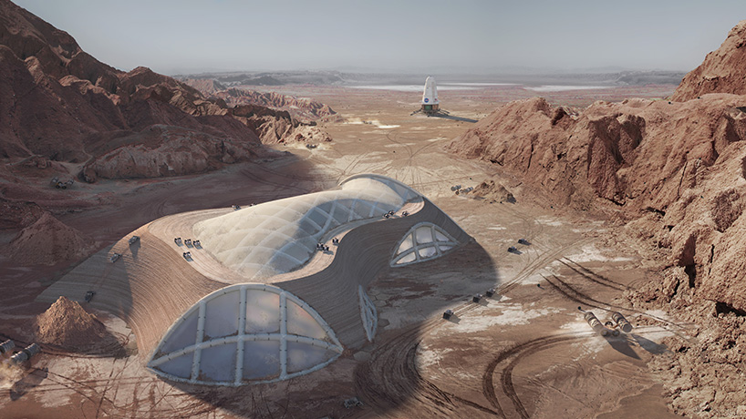
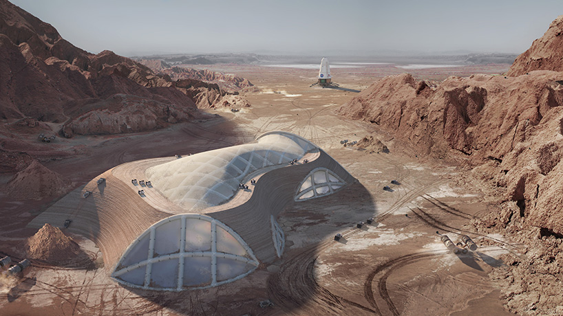
 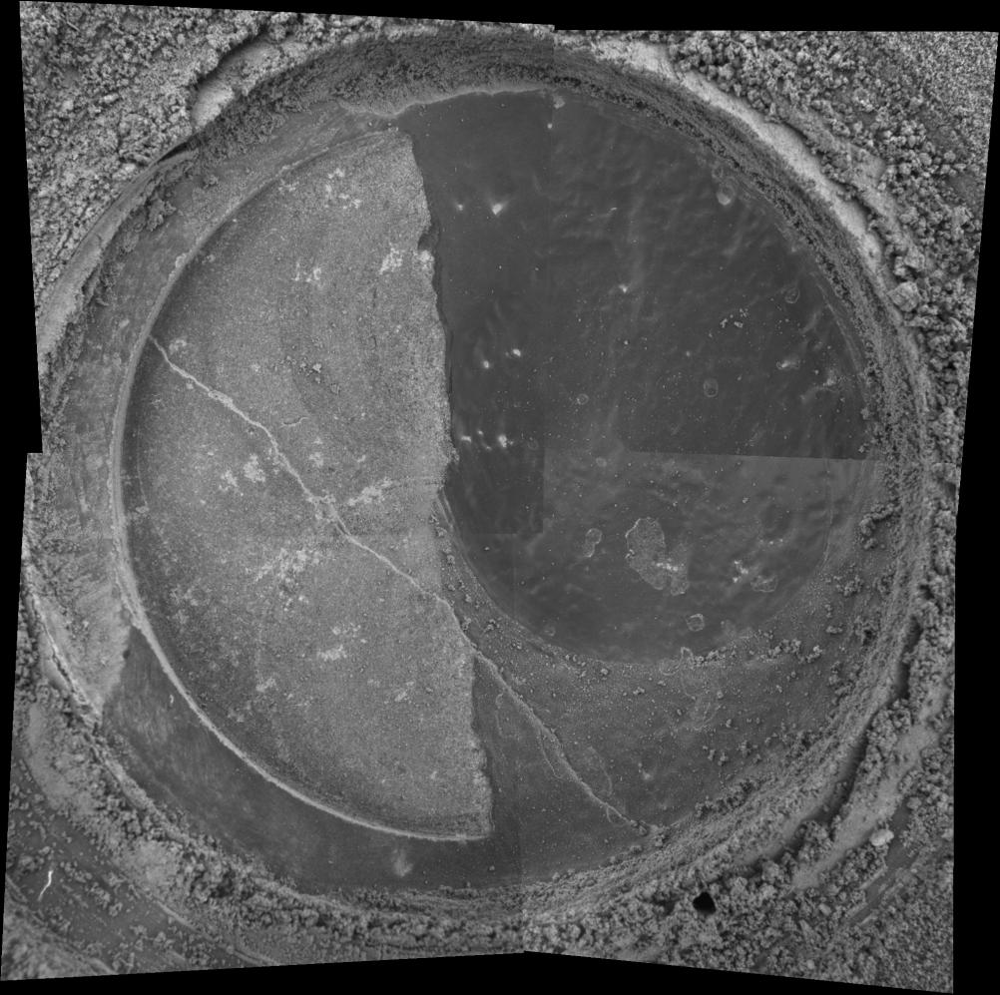
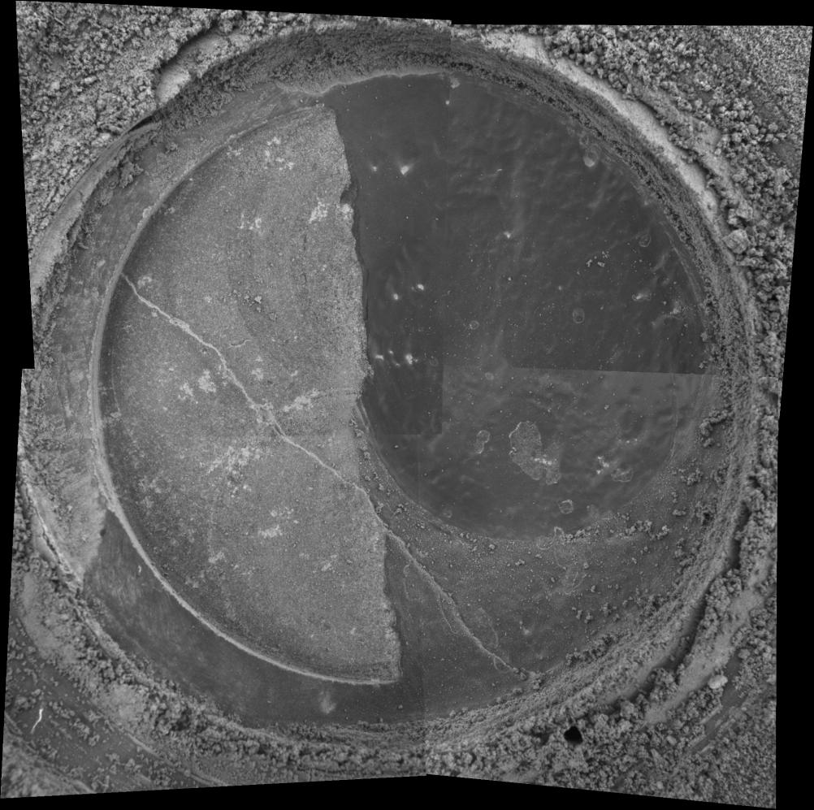
10-Roland Barthes,
(1957) Mythologies,
Seuil
11-Image microscopique du rocher Gong Gong sur Mars ©Nasa 2006
12-3d modélisation des effets du vent sur la roche volcanique de Mars, ©Nasa 2006
11-Image microscopique du rocher Gong Gong sur Mars ©Nasa 2006
12-3d modélisation des effets du vent sur la roche volcanique de Mars, ©Nasa 2006
Ces scénarios de vie mis en image renvoient
une vision positive, optimiste de la crise climatique,
en proposant une idée de l’avenir qui permettrait
d’adapter nos habitudes quotidiennes
à une autre planète . L’iconographie de ces
récits est fortement persuasive de par sa dimension
immersive d’un futur spectaculaire. Cette
vision de l’avenir empruntée à la science fiction
devient palpable grâce à sa rhétorique visuelle
savante et technologique.
En effet, L’iconographie néolibérale se déploie
majoritairement dans l’utilisation de la technologie,
de la science ou du progrès, comme des
disciplines fiables et tournées vers l’avenir.
Ce sont des langages visuels qui inspirent la
confiance. La science étant associée dans l’imaginaire
collectif à un champs rationnel, porteur
de vérité.
Dans Publicité de la profondeur 10,(1957) Roland
Barthes, met en avant cette stratégie de communication:
l’utilisation d’introductions scientifiques
dans les spots publicitaires cosmétiques.
Ils introduisent le produit, donne du corps et
justifient les biens faits de la crème, du sérum ou
de l’élixir à appliquer. Il dit des ces avant-propos
scientifiques qu’ils « indiquent seulement
qu’il s’agit de principes (vivifiants, stimulants,
nutritifs) ou de sucs (vitaux, revitalisants,
régénérants), tout un vocabulaire moliéresque,
à peine compliqué d’une pointe de scientisme
(Vagent bactéricide R 51). » Le champs lexical
dermatologique, fait parti d’une stratégie commerciale,
elle ne nous informe que très succinctement
sur les propriétés du produit. Pourtant
le vocabulaire savant renvoie l’idée d’un produit
fiable, complexe, développé dans une grande
connaissance.
À l’image de ces spots publicitaires, l’iconographie
néo libérale emprunte également au language
visuel scientifique.
La Nasa publie fréquemment des images de ces
travaux dans son « Photojournal ». La grande
technicité de ces images, prises par des engins
sophistiqués ou modélisés, donne de la matérialité
au projet de recherche menés sur Mars.
NASA’s Mars Exploration Rover Spirit used its
microscopic imager to capture this spectacular,
jagged mini-landscape on a rock called “Gong-
Gong.” Measuring only 3 centimeters (1.2 inches)
across, this surface records two of the most
important and violent forces in the history of
Mars -- volcanoes and wind. 11 12
La dimension grandiose de ces images, nous
plonge dans un milieu onirique, étrange, et la
technicité de cette vision microscopique témoigne
des moyens mis en oeuvre pour la recherche
d’un nouveau milieu habitable. Pendant un
instant, on se projette, vers cette ailleurs qui
pourrait être une solution pour faire perdurer
nos modes de vie, et assurer la continuité de la
existence terrestre autre part.
En effet, cette nouvelle planète permettrait
de trouver de nouvelles ressources à extraire
pour faire subsister le mode de consommation
capitaliste actuel. Cependant transposer les
comportements qui nous ont menés à l’épuisement
des ressources naturelles sur terre, à une
autre planète a ses limites. Il n’y aucune prise en
compte des conséquences de l’action humaine
sur son environnement contrairement aux
récits humano-centrés. Voir, ils appellent à
continuer d’extraire des ressources d’une autre
planète.
Les thermes « occupy mars » 13 imprimés sur
des t-shirt vendus sur le online shop de Space
X incarnent une vision colonialiste caractéristique
des récits néo-libéraux. À l’image des
croisades, ou des conquêtes des « nouveaux territoires
» par les colons, ces scénarios de vie sur
Mars perpétuent une histoire de l’exploitation
des autres, et de la faune et la flore .
À l’époque de la sortie du cours métrage Des-


15-Capture d’écran du
cour-métrage Destination
Earth, (1956)
14-Packshot t-shirt 0ccupy Mars @SpaceX
14-Packshot t-shirt 0ccupy Mars @SpaceX
tination Earth14de Carl urbano, en 1956, on
cultive déjà l’idée que la planète mars, pourrait
être un nouveau laboratoire de ce mode de vie, ce
canon idéal, déjà présent sur Terre.
Dans l’animé, les martiens entreprennent une
mission observatrice de la planète Terre avec
pour but de comprendre ce qui la rend si bien.
Ils déduisent alors à la découverte des États Unis
que le bonheur réside dans un marché ouvert,
et l’extraction de pétrole. C’est un récit propagandaire
du mode de vie capitaliste en somme.
Ce cours métrage vient valider et encense la
culture libérale de manière propagandaire. La
métaphore du martien, représente l’alterité, l’autre,
ignorant, à éduquer et initier à cette idéologie.
Ce récit fait l’apologie du capitalisme, en
répétant les schéma historiques de colonisation
des territoires.
De plus, la réalité de ces conceptions d’un futur
glorieux technologique s’adressent à une élite: il
s’agit de programme onéreux qui s’adresse à une
minorité favorisée.
Les mission Dragons, issue du programme Space
X de Ellon Musk sont l’exemple même d’une
privatisation d’un service de locomotion extraterrestre
pour une infime partie de la société. Il
est décrit sur le site qu’il est capable de transporter
7 passagers et qu’il s’agit du « premier
vaisseau spatial privé à emmener des humains
et des marchandises à la station spatiale. » Une
première mission à été réalisé en septembre
2021 où 4 citoyens, non astronautes professionnels
ont pu orbiter autour de la planète bleue.
Les coups engendrés par ce tourisme spatial sont
énormes, rendants évident la place que prendraient
les inégalités économiques dans l’accès au
voyage spatial.
Les scénarios futuristes néo-libéraux, ont la
qualité d’être des récits optimistes, qui s’appuient
sur l’idée d’un progrès constant, et d’une
adaptation de l’espèce humaine aux nouveaux
enjeux climatiques qui s’imposent. C’est en
effet une vision très positive, qui donne envie
d’y croire en cet avenir. Cependant ils reposent
sur une conception héritée du colonialisme,
d’exploitation de la nature et des êtres, dont il
faudrait nous détacher si nous voulons imaginer
un futur plus viable.
03 RÉCITS COMPLOTISTES


15-Monique Pinçon
Charlot, L’holocauste
écologique et sa finalité
pour la bourgeoisie,
10.02.2020), Youtube
http://www.youtube.com/
watch?v=Gt4OSu-LSMY
16- Loïc Nicolas, Les Rhétoriques de la conspiration (Paris, 2010)
16- Loïc Nicolas, Les Rhétoriques de la conspiration (Paris, 2010)
Les récits conspirationnistes eux rejettent les
faits avancés par les institutions impliquées
dans la recherche sur le réchauffement climatique.
Ce sont des récits avec une force d’attraction
populaire, qui se veulent à contre courant
du mode de pensée majoritaire, ou expert. Il
existe beaucoup de voix différentes comme les
Flat Earthers, Quanon, ou encore les Antivax.
Un de leur points de connivence est la remise
en question d’informations et de savoir diffusé
à grande échelle. Par exemple ils rejettent l’industrialisation
comme cause de la crise climatique
mais avancent plutôt une conspiration
des plus riches pour exterminer les plus pauvres.
L’ancienne chercheuse au CNRS Monique
Pinçon Charlot théorise même un “holocauste
climatique”. Dans une vidéo publiée le 10
février 2020 15, elle accuse les classes les plus
supérieures d’essayer d’ “exterminer la moitié
la plus pauvre de l’humanité” au travers des différents
évenements climatiques catastrophiques
comme la Covid 19.
Les récits climatiques conspirationnistes, ne se
concentrent pas sur les conséquences de la crise
climatique ou des actions à entreprendre mais
produisent une histoire alternative des causes
de cette crise. Contrairement aux récits humano-
centrés, ils ne soulignent pas l’action individuelle
et citoyenne comme la raison de ces
catastrophes naturelles mais plutôt un système
corrompu.
La crise environnementale est même considérée
comme une fausse information, voir un écran
de fumé, mise en place par une élite. Il s’agirait
d’un complot pour réduire les libertés individuelles.
C’est pourquoi ces modes de pensées sont
d’abord en grande opposition avec la connaissance
et la production du savoir : le discours
conspirationniste émets de fortes suspicions
autour des informations ordinaires, des faits
scientifiques également qui seraient frauduleux.
Les rapports des institutions seraient issus
d’un complot scientifique mondial visant au
contrôle des populations.
Selon Loïc Nicolas, « la démarche conspirationniste
s’attache à recueillir et à combiner des
événements épars élevés au statut de faits bruts,
pour les faire tenir ensemble au sein d’une
trame narrative » (2010) 16.
En effet, la rhétorique complotiste recrée des
liens entre des évènements, dont la source, la
cause serait la même pour tous.
Il y a quelques mois, pendant la campagne de
vaccination contre la Covid-19, une vague contestaire
avance une théorie de décrédibilisation.
Elle combine, l’actualité de ces campagnes de
vaccination avec l’arrivée de la 5G en France.
Il contiendrait des puces électroniques 5G permettant
de pister les personnes vaccinées et
récupérer des données privées. C’est un exemple
typique de la rhétorique complotiste qui rassemble
plusieurs actualités ensemble et recréer
une trame narrative qui sème la confusion.
Visuellement, ce sont des scénarios populaires,
qui donnent de l’importante au sensationnel.
À travers les plateformes de diffusion, les
réseaux sociaux permettent aux débats et aux
discours d’être décontextualisés, remodelés
etc… La reproduction, et le mimétisme de mots,
ou d’ensemble de phrases, sont des outils importants
de la rhétorique conspirationniste.
En se multipliant, le message, reproduit et réinjecté
tend à la diffusion et la validation du mode
de discours conspirationniste.